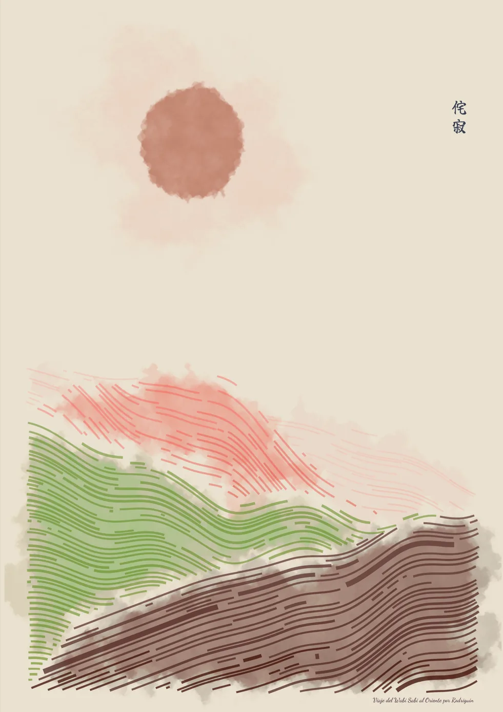
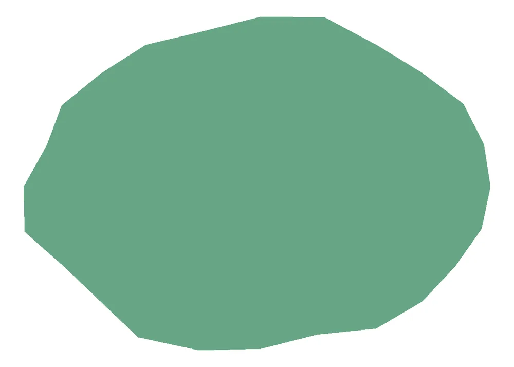
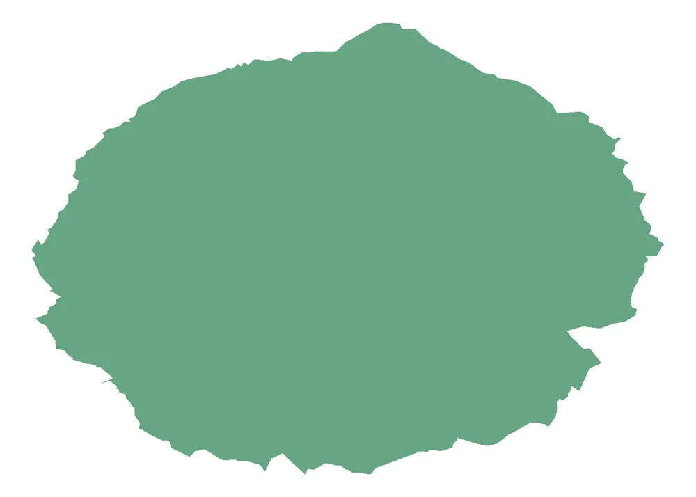
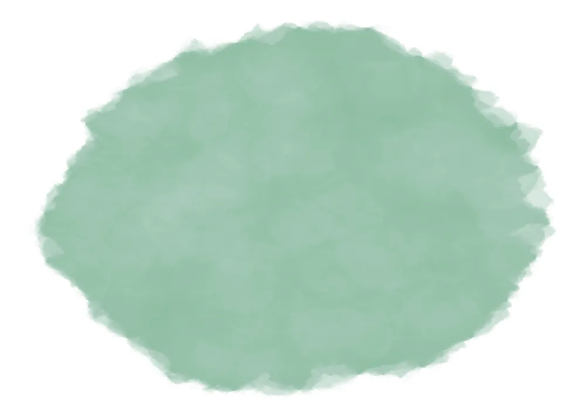
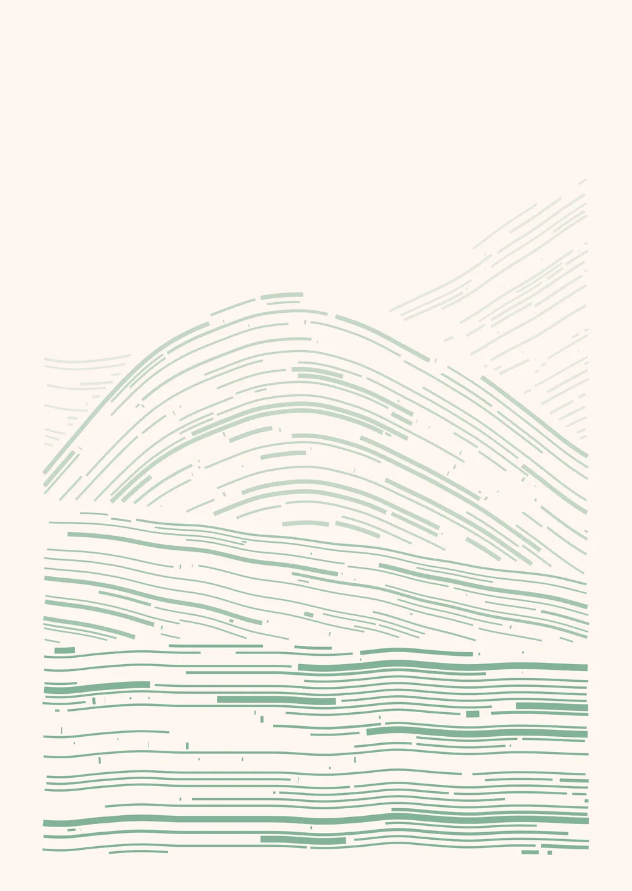
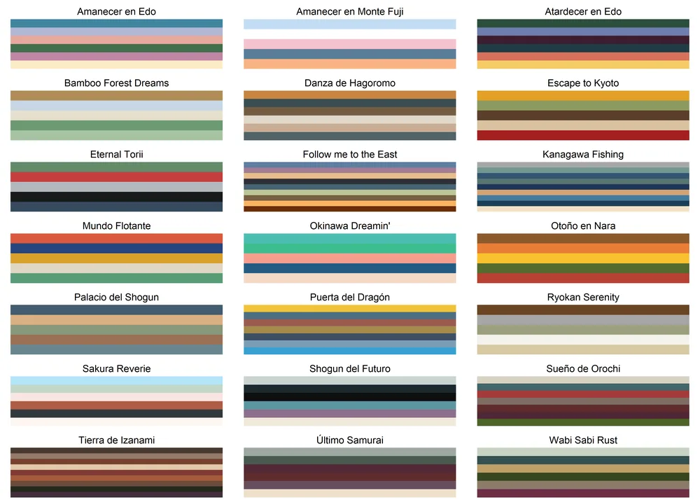

Viaje del Wabi Sabi al Oriente

La colección Viaje del Wabi Sabi al Oriente busca celebrar la belleza de lo imperfecto y lo efímero, principios fundamentales del wabi-sabi. Esta colección intenta capturar la serenidad y profundidad de estas ideas a través del arte algorítmico.La técnica utilizada combina la aleatoriedad y fluidez de la acuarela con líneas suaves que evocan calma y aceptación. La acuarela, con su tendencia a producir formas impredecibles, simboliza la belleza de la imperfección. Por otro lado, las líneas buscan evocar calma y tranquilidad, pienso que reflejan un poco la sabiduría que da el paso del tiempo y el aceptar el paso del tiempo en nosotros mismos.

Obras como Yonder de Thomas Lin Pedersen y el blog de Tyler Hobbs sobre la simulación de acuarela influyeron profundamente en el proceso creativo. Esta mezcla de técnicas y conceptos refleja un viaje hacia el descubrimiento y apreciación del wabi-sabi.
Viaje del Wabi Sabi al Oriente invita a los observadores a explorar la intersección entre tecnología y arte, mostrando cómo los algoritmos pueden capturar la esencia de conceptos filosóficos profundos. Este proyecto combina precisión algorítmica con un toque humano, resultando en piezas que celebran lo humano y lo impermanente.
Ahora, exploremos un poco más los aspectos técnicos detrás de esta colección.
Proceso técnico
El algoritmo para generar las piezas utiliza:
- Simulación de acuarela: Basada en la técnica descrita por Tyler Hobbs, replicando cómo el pigmento interactúa con el papel. El proceso consiste en tomar un polígono como base, que en esta obra es el blob que luego será la luna/sol y los polígonos de cada colina/ola.


Este polígono deformado será solamente una capa. El efecto final se logrará superponiendo muchas capas con muy poca opacidad.

- Capas de flowfields: Patrones fluidos generados para las líneas utilizando Perlin noise, creando curvas suaves y naturales. El proceso funciona de la siguiente manera, se calcula un flowfield para cada capa, estas capas luego serán las colinas/olas. Luego se elije una línea de corte para cada capa, que será la línea más larga dentro de un rango de posibles alturas para cada colina. Después se filtran solo las líneas que no se superponen con las capas previas. A su vez las capaz puede tener menor opacidad a medida que se acercan al horizonte.
El resultado de ese proceso resulta en algo así:

Luego se realiza el proceso de transformación en acuarela de los polígonos que forman cada colina u ola. Las capas de acuarela se intercalan para que los distintos colores de las colinas se mezclen mejor y el resultado se vea más natural.

Finalmente la leyenda Wabi Sabi en Japonés (侘寂) puede agregarse o no.
El algoritmo está implementado en R, mientras que el cálculo de los flowfields se realiza en C++ usando el paquete Rcpp, permitiendo una mezcla eficiente de lenguajes para lograr los efectos deseados.
Paleta de colores
La colección incluye paletas creadas específicamente para evocar la estética japonesa, junto con colores ya utilizados en colecciones anteriores que igualmente sufren un cambio debido a aparecer en formas de acuarela. Estas paletas reflejan paisajes y elementos naturales, como montañas, bosques y atardeceres. A continuación se muestran las paletas inspiradas en Japón.

Narrativa y filosofía
El título “Viaje del Wabi Sabi al Oriente” refleja la narrativa detrás de esta colección: un viaje de descubrimiento hacia una filosofía que celebra la imperfección, la transitoriedad y la simplicidad. Cada pieza de la colección representa un paso en este viaje, invitando al espectador a reflexionar sobre su propia conexión con estos principios.


Adquiere tu obra
Cada obra de esta colección es única, creada mediante un proceso algorítmico que combina arte y tecnología. Si deseas adquirir un ejemplar de esta serie, puedes comunicarte conmigo a través de mi mail hola@rodrigoestrella.com. Debido a la gran cantidad de componentes aleatorios que participan al generar un cuadro, cada resultado es único e irrepetible. Para hacer honor a esa característica del arte algorítmico, solo se puede hacer una impresión por imagen.